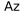

Stadtgrenze
 | Stadtgrenze |
Velobelastungsplan
Der Velobelastungsplan stellt eine modellierte und hochgerechnete durchschnittliche tägliche Querschnittsbelastung (DTV) für den Verkehrsträger Velo dar. Der dargestellte Velobelastungsplan ermöglicht erstmals Aussagen zur Nachfrage und Routenwahl im Veloverkehrsnetz der Stadt Winterthur. Diese Daten sind aufgrund der Datenerhebungsmethodik mit einer gewissen Ungenauigkeit behaftet.
Die Grundlage der Modellhochrechnung sind anonymisierte Bewegungsdaten aus der Veloförderaktion Cyclomania von ProVelo Schweiz, welche im September 2020 stattfand und durch die Stadt Winterthur begleitet wurde. Während der Dauer der Aktion wurden zusätzliche Querschnittmessungen durchgeführt. Diese Querschnittsmessungen zeigten, dass die Rohdaten aus Cyclomania rund 1% (Bandbreite 0.8 bis 1.4%) des effektiven Veloverkehrs entsprechen. Die Ungenauigkeit der Modellhochrechnung ist insbesondere durch den ermittelten Hochrechnungsfaktor und die Zuweisung der Rohdaten auch effektive Achsen zu begründen.
Beschriftung Modellhochrechnung Velobelastung 2020
 | DTV |
Modellhochrechnung Velobelastung 2020
DTV bis 150 | |
DTV von 151 bis 400 | |
DTV von 401 bis 700 | |
DTV von 701 bis 1000 | |
DTV von 1001 bis 1300 | |
DTV mehr als 1301 |
Stadtgrenze
| Stadtgrenze |